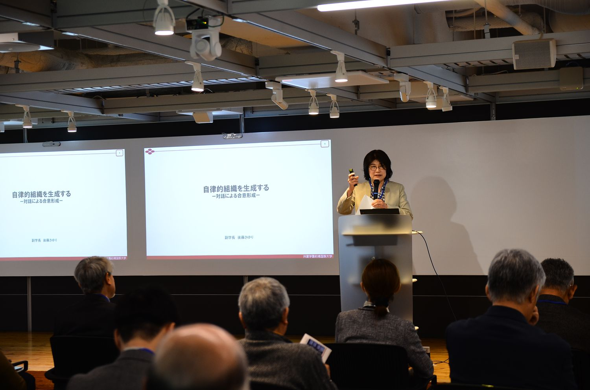
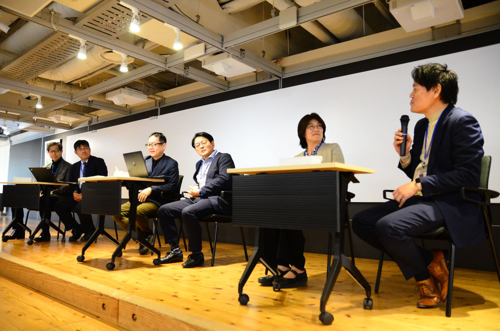
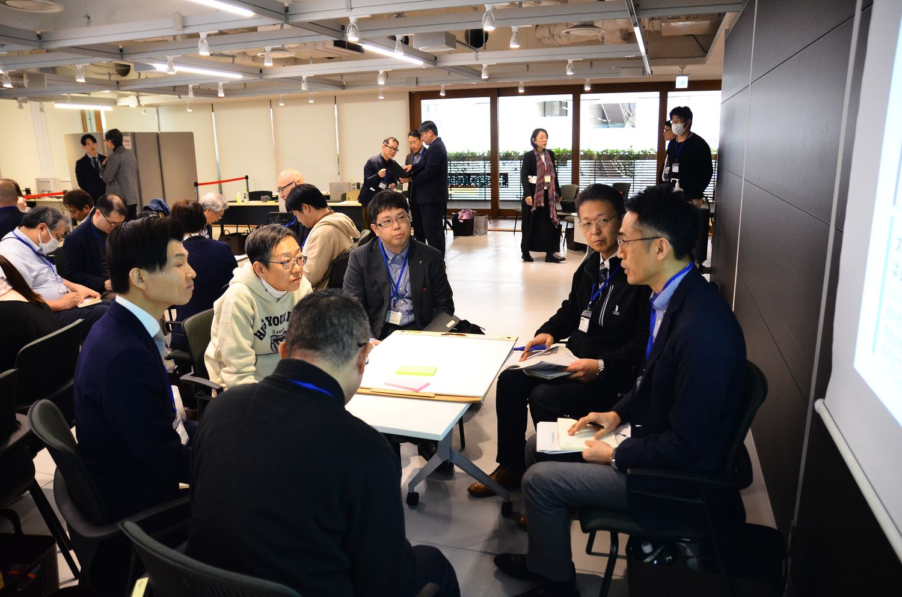

大学の教育ビジョンが、学長から副学長・学部長を経て、一人ひとりの授業担当者に届き、最終的に学生の成長につながるまで――そのプロセスには何が起きているのでしょうか。
第8回は、共愛学園前橋国際大学から大森昭生学長、後藤さゆり副学長、村山賢哉学部長の三者が揃って登壇するという、これまでにない試みで実施しました。同じ大学の「トップ」「ミドル」が、同じ改革について、それぞれの立場から語ることで、そこに現れた「見え方の落差」こそが、今回最大の発見でした。



| 日時 | 2026年3月22日（日） 14:00開始 |
|---|---|
| 会場 | 株式会社内田洋行 新川本社 ユビキタス協創広場 CANVAS（東京都中央区新川2-4-7） |
| 主催 | 大学リーダーシップ研究会 |
| 参加者 | 70名（一般参加60名／主催・事務局7名／登壇者3名） |
参加者数は、研究会が保有する第1〜9回の統合参加者データ（v13）にもとづく集計です。申込記録を基礎としているため、当日の実数とは若干の差がありえます。
大森学長は、共愛学園の全体像と教学マネジメントの仕組みを紹介したうえで、自身の役割を「国の動向を共愛学園に合う形に翻訳するのが私の仕事。具体化は頼んだ、と言って任せる」と表現しました。
村山学部長は、平時は現場から課題が上がりミドルが調整する「分権型」、有事には学長がビジョンを発出しミドルに委任する「トップダウン型」という2つのマネジメント・パターンを提示しました。学長が学内を「歩いて」現場の声を拾い、ミドルがそれを受けて「走る」という構図は、「歩く学長・走るミドル」という言葉で会場の共感を集めました。
後藤副学長は、ビジョンの共有において「権威的な伝達」は機能せず、「賛成・反対の議論」にも限界があると整理し、異なる専門分野の教職員が互いの見え方を「チューニング」する対話の積み重ねが自律的な組織を作ると述べました。
翻訳は多層的である。山本が「大森先生自身がまず翻訳者ですよね」と指摘し、村山学部長が「共愛的に翻訳するのが学長。うちの学生版に翻訳するのが自分」と応答しました。ビジョンは1回の翻訳ではなく、複数の段階を経て現場に届いています。
成田先生の「自転車操業で動いてるから先に進んでいるのでは」という問いに、大森学長は「逆に言うと止まったら死ぬんですよ」と即答しました。村山学部長は「我々が常に錦の御旗にあげるのが学生」と述べ、「学生のために」という言葉が教職員の対立を調停する共通言語として機能している実態が見えてきました。
9グループに分かれ、「ビジョンが現場に届いている部分」「途切れている部分」を書き出し、「明日からの一手」を言語化しました。「ビジョンは副学長・学部長までは届くが、その下の教員には届きにくい」「教員と職員のコミュニケーションの分断」といった共通の課題とともに、「味方を増やす」「学生の声を起点にする」「対話の場を制度として作る」といった一手が提案されました。
フロアからの問いに対し、大森学長は「入学定員充足率64%まで落ちたことがある。座して死を待つのみだった」と率直に語り、「仕組みを作って動いて、上の人たちをそこに引き込むところまで仕掛けないといけない」と述べました。
第8回は、科研費第2期の探索・構造化フェーズにおけるパイロット事例研究として位置づけられます。今回の最大の知見は「翻訳」という概念の拡張です。トップ自身も翻訳者であること、翻訳は双方向であること、翻訳は各層の文脈に合わせた創造的なリフレーミングであること、そして翻訳は互いへの信頼関係のもとで成立していること――これらの発見は今後の調査設計に活かされます。
2026年3月25日の『教育学術新聞』に開催報告が掲載されました。
学長・副学長・学部長の三者が異なる景色を語ったことへの反応が中心です。ビジョンを「翻訳」する役割を自分の立場に引き寄せて考えた記述が多く、話題提供2・3の評価4.86は全回の全セッションで最も高い数値となりました。
| 研究会全体の満足度 | 4.68 |
|---|---|
| 話題提供1 大森 昭生 | 4.75 |
| 話題提供2・3 村山 賢哉・後藤 さゆり | 4.86 |
| パネルディスカッション | 4.70 |
| グループワーク | 4.37 |
| 会場との質疑応答 | 4.41 |
| 仕事との関連性・有用性 | 4.68 |
参加者アンケートの回答は28件（回答率40.0%）です。満足度は5段階で、数値が大きいほど高い評価を示します。
本研究会はJSPS科研費 基盤研究(C)「ダイナミックな教学マネジメント体制の構築〜ミドル教職員の育成と組織開発に向けて」（研究代表者：山本啓一）の助成を受けて開催しました。